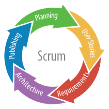
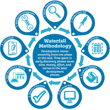
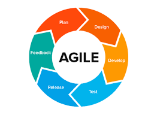

MANAGEMENT EXPERIENCE:
I am an audio and software engineer with a diverse set of management skills and artistic capabilities. Most importantly, I am a scholar with a continous passion to learn.
I can create a wide variety of thematic sound tracks, audio files and songs. I've been creating music and audio tracks since 2015, orginally from Nashville, Tennessee area I learned from the best and have a talent for the craft.
SOFTWARE MANAGEMENT EXPERIENCE:
With over 1 year of management training at Ivy Tech and with
strictly "A" averages under my belt, I quickly grasped the importance of management when creating and
engineering projects to bring forth to the public. My professor adored my skills in management and how I
seemlessly brought those skills to the tech industry. Our teams in management worked well in Agile enviorments,
with glooming deadlines. Our team always broke through and typically was early with delivering most projects.
In my management courses, I excelled by leveraging ERDs to design and create effective databases, applying Agile methodologies to streamline project workflows, and collaborating closely with a dedicated and committed team. Our proactive approach and strong teamwork contributed to achieving solid A's in the courses, reflecting our ability to effectively manage and execute complex projects. Working together, we consistently met deadlines and delivered high-quality results, showcasing our combined skills and dedication. This experience solidified my understanding of database management and reinforced my passion for working collaboratively in high-stakes environments.



WORKFORCE MANAGEMENT EXPERIENCE:
My time at UPS was spent tracking the progress of every employee
within the UPS hub and reported documented information to management for reviewed while maintaining
an updated database on each individual employee progress with the company.
Created excel documents for every employee about tardiness, lateness, and work ethic. Suggested and offered innovative ideas for unique events for employee appreciation. Worked as a team to ensure the dissemination of correct information from management.
At MAPCO I maintained a clean and operational convenient store, and supplied the stores with all it's needs and
operational tasks. Submitted payroll, work receipts and vendor orders. Compiled monthly records of store
sales. Tracked completion of assigned tasks for each employee and attended weekly conference calls with
neighboring districts to discuss upcoming events. Followed prescribed store layouts for new products and
their correct placement also monitored security cameras to watch for and prevent theft within the store.
Worked with vendors when bringing in weekly deliveries and completed work orders and returns for store
merchandise. Offered my assistance and aided other stores within the district, or in other districts,
due to staffing shortages.
FOOD CERTIFICATION EXPERIENCE:
I've worked at TACOBELL for a while, when I was a kid in highschool I got my first job here and through time I became a manager at this company. Working through Covid-19, going through school, I somehow made it through those difficult times and got and education at the other end of it.
I had the opportunity to train new hires and existing team members on
essential operations and collaborated with managers to address various store related concerns. My responsibilities
included creating and managing shift schedules and work assignments, ensuring that food preparation was
timely and aligned with customer needs. I also hold a Food Safety certification, which underscores my
commitment to maintaining high standards in food handling and preparation.
Furthermore, I worked overtime during Covid-19, and im a dedicated worker to any employer I agree to take partnership with. I love new and exciting challenges, with a desire to keep pushing foward even when all other attempts have failed.
I can create a wide variety of thematic sound tracks, audio files and songs. I've been creating music and audio tracks since 2015, originally from Nashville, Tennessee area I learned from the best and have a talent for the craft.